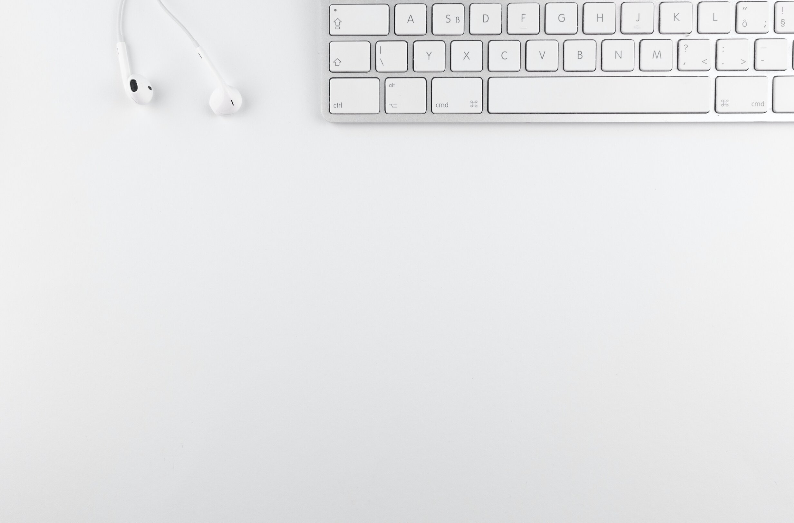
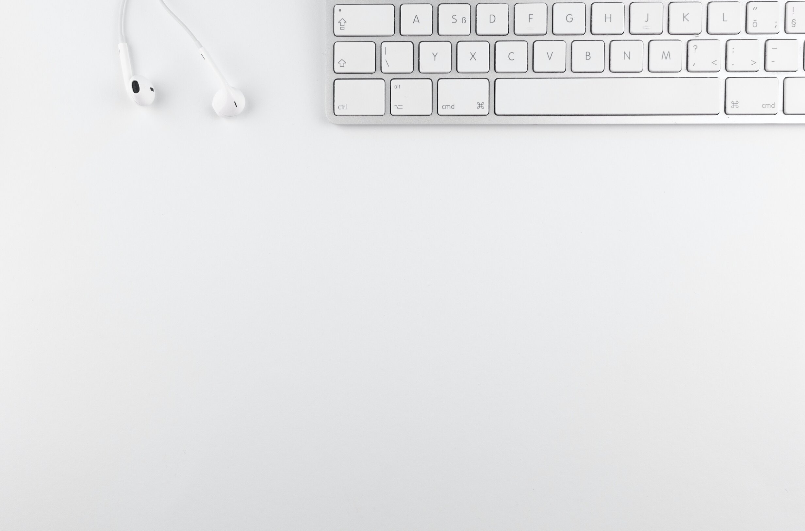

Welcome
Hello, I am Nadia Rodriguez I’m from Argentina. I invite you to see my portfolio, learn more about me, and follow my first steps. In this portfolio you can find my academic training, experiences, projects, and other hobbies that brought me here. Inspiration: I think programming is something I've been looking for for a long time. Mainly the front end allows me to combine creativity, design, and code.
Favorite Quote: “I am in the process of becoming the best version of myself.” | by Brian Ford | Medium.